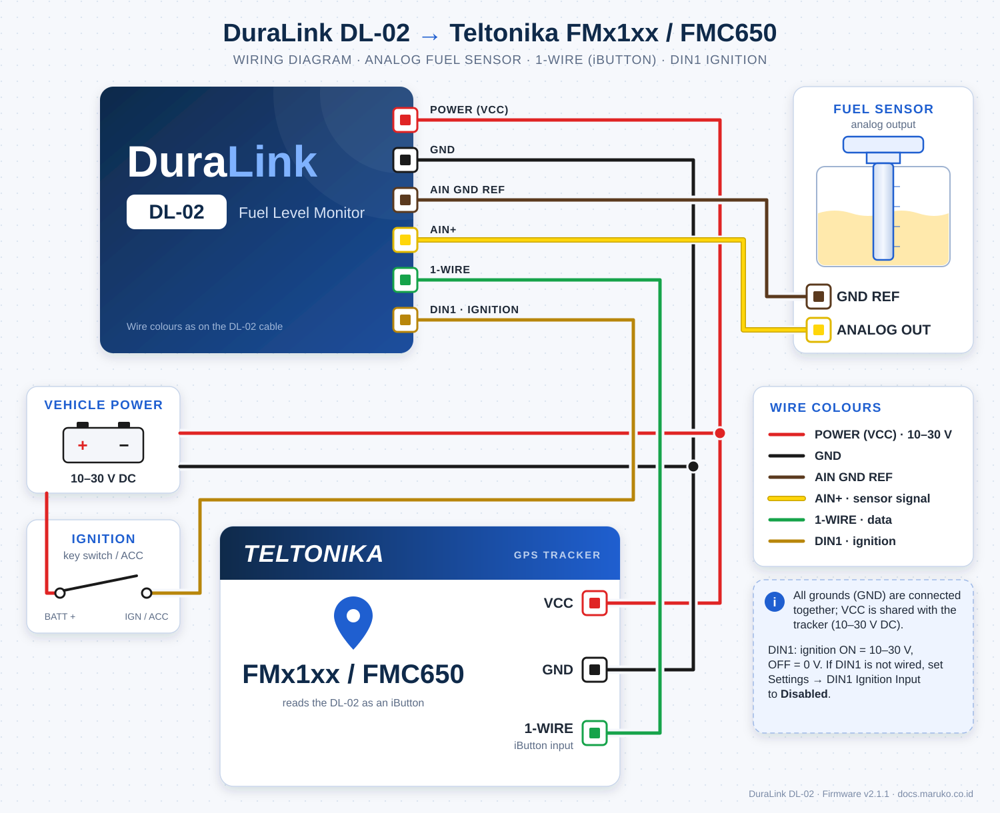

DuraLink DL-02
1. Overview
The DuraLink DL-02 reads fuel level from your vehicle's analog fuel sender and makes that data available to your GPS tracker over a standard 1-Wire connection. It appears to the tracker as a single iButton (DS1990A) whose ID carries Liters, Fill Percentage, Raw Voltage and a Status byte (ignition and digital inputs), with no additional hardware adapters required. The same data is also broadcast over Bluetooth LE.
All configuration is done wirelessly through a built-in web interface accessible from any smartphone or laptop browser. No software installation or laptop cable is needed in the field.
2. Key Features
| Dual-Core Architecture | 1-Wire emulation on Core 1 ensures strict 1-Wire timing, while user web tasks run safely on Core 0. |
| ADS1115 ADC | 16-bit precision via I2C provides highly accurate fuel level voltage readings. |
| Polynomial Calibration | Uses Teltonika-style cubic polynomial (voltage → liters) for exact fuel curve mapping. |
| All-in-One Data Packing | Sends fuel in liters, fill percentage, raw voltage and a status byte (ignition, digital inputs, hold flag) inside a single emulated iButton (DS1990A) ID. |
| Ignition Hold | Freezes the fuel reading at the last valid value while the vehicle ignition (DIN1) is OFF, so a collapsing sender voltage is never reported as an empty or full tank. |
| Bluetooth LE Beacon | Broadcasts the same fuel data, configuration and status over BLE for Teltonika Advanced BLE sensors. |
| Signal Smoothing | Configurable presets (None / Responsive / Balanced / Stable) to eliminate fuel sloshing. |
| NVS Storage | Calibration, filter settings, and WiFi credentials persist across reboots and power cycles. |
| Remote Cloud Update | Download and install the latest firmware over the internet straight from the web UI, with built-in rollback protection. Manual .bin upload is also available. |
| Configuration Backup | Export all settings and calibration to a file and import them on another DL-02 to set up identical units quickly. |
| Watchdog Timer | Built-in 10-second timeout automatically restarts the device if a task hangs. |
3. First-Time Setup
3.1 Wiring Diagram

3.2 Configuration Steps
1. Power on the device
Apply power. The DL-02 starts up and broadcasts its WiFi hotspot within a few seconds.
2. Connect to the DL-02 hotspot
On your phone or laptop, open WiFi settings and connect to:
| Network Name (SSID) | DL02-XXXX (last 4 characters of the device's MAC address — unique per unit, e.g. DL02-197D) |
|---|---|
| Password | duraconfig |
3. Open the web interface
Open any browser and go to: http://192.168.4.1 (or http://dl02-<serial>.local, using the serial number shown on the System tab).
4. Set your tank capacity
Go to the Settings tab → enter your tank capacity in liters → press SAVE at the top of the screen. If the vehicle ignition is not wired to DIN1, also set DIN1 Ignition Input to Disabled (see Section 4.2).
5. Calibrate the fuel sender
Go to the Calibration tab and follow the calibration procedure in Section 6. At least 2 measurements are required.
6. Configure your GPS tracker
Enable iButton reading in your Teltonika Configurator and decode the iButton ID on your server. See Section 5 for details.
http://192.168.4.1 as long as you are connected to the DL-02 hotspot.
You can adjust settings at any time without interrupting the tracker connection.
0 = never).
Fuel data to the tracker is not affected. To turn the hotspot back on, briefly press the BOOT button (do not hold it — holding for 5 s is a factory reset).
4. Web Interface
Open http://192.168.4.1 in your browser while connected to the DL02-XXXX hotspot.
The interface has four tabs at the bottom of the screen.
4.1 Monitor Tab
Shows live readings, updated automatically every 2 seconds:
| Display | What it shows |
|---|---|
| Liters | Calculated fuel level in liters based on your calibration. |
| Percent % | Fill level as a percentage of your configured tank capacity. |
| Analog Voltage (Filtered) | The smoothed voltage used for the fuel calculation. |
| Analog Voltage (Raw) | The voltage reading directly from the fuel sender (before smoothing). A HOLD badge appears when the reading is frozen by Ignition Hold. |
| iButton ID — Raw Hex | The live iButton ID sent to the tracker, decoded byte by byte (see Section 5). |
| Status badges | 1-Wire OK (the tracker is reading the device), IGN ON/OFF (ignition input DIN1), and the active digital inputs. |
4.2 Settings Tab
Change any settings, then press SAVE at the top of the screen. A dot on SAVE means there are unsaved changes.
| Setting | Description |
|---|---|
| Tank Capacity (L) | The total capacity of your fuel tank in liters. This is used to calculate the fill percentage shown on the Monitor tab. |
| Smoothing Level | Controls how much the reading is stabilised against vibration and sloshing. See Section 7. |
| WiFi Timeout — Inactivity Timeout (Minutes) | The hotspot turns off after this many minutes without web activity to save power (default 60, 0 = never). Briefly press BOOT to turn it back on. |
| Ignition Hold — DIN1 Ignition Input | Enabled (default): while ignition is OFF the fuel reading is frozen at the last valid value; after ignition ON it stays frozen another 5 s while the sender settles. Set to Disabled if DIN1 is not wired — an unconnected input reads as ignition OFF and would freeze the reading permanently. |
| Drop Trigger / Maintain Threshold (mV) | Fallback hold for installs without DIN1: a sudden voltage drop larger than the Drop Trigger freezes the reading while the voltage stays below the Maintain Threshold. Drop Trigger 0 = off (default). |
4.3 Calibration Tab
| Control | Description |
|---|---|
| Live Sensor Reading | The current filtered voltage from the fuel sender. |
| + Add This Reading | Adds a calibration point with the current voltage captured automatically — you only enter the liters. |
| Calibration Points table | The list of liters/voltage pairs you have recorded. |
| + Add Empty | Add an empty row to enter a liters/voltage pair by hand. |
| Clear All | Erase all calibration data. |
| Calculate Calibration | Computes the fuel curve from your measurements and saves it to the device. |
| ↓ Export | Download a backup of your calibration data as a file. |
| ↑ Import | Restore calibration from a previously saved backup file. |
4.4 System Tab
| Section | Description |
|---|---|
| WiFi Access Point | View the device network name and change the hotspot password. The device restarts after saving. |
| Remote Cloud Update | Check for and install the latest firmware over the internet. See Section 8.1. |
| Manual Firmware Flash (.bin) | Upload a firmware file provided by your supplier. See Section 8.2. |
| Configuration Backup | Export Config saves all settings, the calibration, the hotspot password and the router WiFi to a file; Import Config loads it on another DL-02. Serial number, hotspot name and hostname are not copied. The file contains passwords in plain text — store it carefully. |
| Device Info | Firmware version, PCB revision, serial number and MAC addresses (WiFi AP, WiFi STA, Bluetooth LE). |
| Diagnostics | Uptime, boot count, last reset reason, memory, and 1-Wire poll rate / health — useful for support purposes. |
| Reboot Device | Restart the device remotely. |
5. Tracker Configuration
The DL-02 sends all data as a single 1-Wire iButton ID. Enable iButton / Dallas (AVL ID 78) in your Teltonika Configurator; the tracker then reports the 8-byte ID to your server, where it is decoded.
The live iButton ID is shown, already decoded, on the Monitor tab of the web interface.
iButton Data Parsing (Hex Payload)
Firmware 2.1.0 and later use layout v2 (first byte 02). The 8 bytes, in the order shown on the Monitor tab:
| Byte | Metric | Decoding Math |
|---|---|---|
| [0] | Layout ID | 02 = layout v2 (01 = firmware 2.0.x, see note below) |
| [1–2] | Fuel Liters | Hex to Decimal, then divide by 10 |
| [3] | Fill Percentage | Hex to Decimal, then divide by 2 |
| [4–5] | Analog Voltage (Raw) | Hex to Decimal (millivolts) |
| [6] | Status | Bit flags — see table below |
| [7] | Checksum | Dallas CRC-8 of bytes [0–6]; the tracker uses it to reject corrupted reads |
Status Byte [6]
| Bit | Value | Meaning when set |
|---|---|---|
| 0 | 0x01 | DIN1 active — ignition ON |
| 1 | 0x02 | DIN2 active |
| 2 | 0x04 | DIN3 active |
| 3 | 0x08 | DIN4 active |
| 4 | 0x10 | Reading frozen (Ignition Hold) — liters and percent are the last valid value, not live |
| 5–7 | — | Reserved (0) |
Example Backend Parsing
iButton ID 0201C593092E0119 (ignition ON, reading live):
- Byte [0]: 02 → layout v2
- Bytes [1–2]: 01C5 (Hex) = 453 (Dec) → 453 / 10 = 45.3 Liters
- Byte [3]: 93 (Hex) = 147 (Dec) → 147 / 2 = 73.5 % Full
- Bytes [4–5]: 092E (Hex) = 2350 (Dec) = 2350 mV (Raw Analog)
- Byte [6]: 01 → Ignition ON, not frozen
- Byte [7]: 19 → checksum
iButton ID 0203E8C82FBE106A (ignition OFF, reading held):
- Bytes [1–2]: 03E8 = 1000 → 100.0 Liters; Byte [3]: C8 = 200 → 100.0 %
- Bytes [4–5]: 2FBE = 12222 mV
- Byte [6]: 10 → Ignition OFF, reading frozen at the last value before ignition OFF
6A10BE2FC8E80302). Check which order your server delivers before decoding — in the order above, the layout ID 02 is the first byte.
01), where byte [6] was the filtered voltage (divide by 10 → volts).
Use the first byte to tell the layouts apart, and update your server decoder before updating units in the field.
6. Calibration Guide
Calibration teaches the DL-02 how the voltage from your fuel sender corresponds to actual fuel levels in your tank. The more measurement points you provide, the more accurate the result. A minimum of 2 points is required; 4 or more is recommended.
Calibration Procedure
1. Start with a known fuel level
Begin with your tank at a known level — empty, or a specific number of liters you can measure accurately.
2. Open the Calibration tab
In the web interface at http://192.168.4.1, tap the Calibration tab.
3. Add a point
Tap + Add This Reading — the current voltage is recorded automatically. Enter the current fuel level in liters in the new row.
4. Add fuel and repeat
Add fuel to a new known level. Wait a few seconds for the reading to settle, then repeat Step 3. Aim for at least 4 points — for example: empty, quarter, half, three-quarter, and full.
5. Calculate
Once all points are entered, tap Calculate Calibration. The device computes the fuel curve and saves it automatically.
6. Verify
Check the Monitor tab to confirm the Liters reading matches your actual fuel level. Add more points and recalculate if needed.
7. Signal Smoothing
Road vibration and fuel sloshing can cause the fuel reading to fluctuate. The DL-02 includes powerful filtering algorithms to stabilise the reading. You can configure this in the Settings tab.
| Preset | Best For |
|---|---|
| None | Raw sensor voltage with no smoothing (testing and calibration checks) |
| Responsive | Calm roads, fast changes, low vibration environments |
| Balanced | Most vehicles and standard road conditions (Default) |
| Stable | Heavy vibration, off-road driving, or rough terrain |
8. Firmware Update
Firmware can be updated wirelessly from the web interface — no cable or site visit required — either directly from the internet (Remote Cloud Update) or from a file provided by your supplier (Manual Firmware Flash).
8.1 Remote Cloud Update
You need a 2.4 GHz WiFi network with internet access nearby (a site router or a phone hotspot).
1. Open the System tab
Connect to DL02-XXXX, open http://192.168.4.1 and tap the System tab.
2. Tap Check for Updates
The device enters Update Mode and scans for WiFi networks. In Update Mode the fuel readings, 1-Wire output and BLE are paused and the LED blinks twice per second.
3. Connect to the internet
Choose your WiFi network from Available Networks (or enter its name manually), enter its password and tap Connect. Once connected, the device checks for a newer release automatically.
4. Install
If a new version is available, its version and notes are shown. Tap Upload Firmware under the release notes and confirm. The LED flashes rapidly while the firmware downloads (about 20 s on a good connection).
5. Wait for reboot
The device restarts on the new firmware by itself. Reconnect to the DL-02 hotspot and check the version on the System tab.
8.2 Manual Firmware Flash (.bin)
1. Obtain the update file
Contact your supplier to receive the firmware update file (.bin format).
2. Connect to the DL-02 hotspot
Connect to DL02-XXXX and open http://192.168.4.1 in your browser.
3. Select the update file
On the System tab, under Manual Firmware Flash (.bin), tap Choose File and select the .bin file.
4. Upload and install
Tap Upload Firmware. A progress bar shows the status. Do not close the browser or remove power during this step.
5. Wait for reboot
The device reboots automatically after the upload completes.
9. Factory Reset
If you have forgotten the hotspot password, or if the device needs to be returned to its original default settings, you can perform a factory reset using the BOOT button on the device.
Reset Procedure
1. Ensure the device is powered on and running normally
Do not hold the button while connecting power.
2. Press and hold the BOOT button for 5 seconds
The button is labelled BOOT on the device. The LED turns solid when the reset starts. Releasing earlier cancels the reset (a short press only turns the WiFi hotspot back on).
3. Wait for the device to reboot
The device erases all settings and restarts automatically.
4. Reconnect with the default credentials
Use the factory-default hotspot password to reconnect and reconfigure.
Default Settings After Reset
| Setting | Default Value |
|---|---|
| Hotspot Name (SSID) | DL02-XXXX (unique to the device) |
| Hotspot Password | duraconfig |
| Web Interface URL | http://192.168.4.1 |
| Tank Capacity | 100 L |
| Smoothing Level | Balanced |
| WiFi Timeout | 60 minutes |
| DIN1 Ignition Input | Enabled |
| Calibration | Cleared — recalibration required |
10. Troubleshooting
| Problem | What to Check |
|---|---|
| Tracker shows no fuel sensor data | Confirm iButton reading (AVL ID 78) is enabled in the Teltonika Configurator and the 1-Wire cable is connected properly. The 1-Wire OK badge in the web interface shows whether the tracker is reading the device. |
Tracker sometimes shows iButton 0000000000000000 | Update the DL-02 to firmware 2.1.0 or later (Section 8) — earlier versions could miss tracker reads while the tracker was busy sending data. |
| Fuel reading does not change / HOLD badge stays on | The reading is frozen by Ignition Hold. Check the IGN badge: if it shows OFF while the ignition is on, check the DIN1 wiring, or set DIN1 Ignition Input to Disabled if DIN1 is not connected. |
| LED blinks twice per second, no readings | The device is in Update Mode. Tap Cancel & Resume Normal Operation on the System tab, reload the page, or wait 10 minutes — it returns to normal operation by itself. |
| DL02 hotspot is not visible | The hotspot turns off after the WiFi Timeout (default 60 minutes). Briefly press the BOOT button to turn it back on. |
| Fuel reading shows 0 or is clearly wrong | The device may not be calibrated yet. Open the Calibration tab and follow the calibration procedure in Section 6. |
| Fuel reading jumps around | Increase the smoothing level in the Settings tab. Try Balanced or Stable. |
| Cannot connect to the web interface | Make sure your phone is connected to the DL02-XXXX WiFi network — not your home or office network. Then open http://192.168.4.1. |
| Forgot the hotspot password | Perform a factory reset (see Section 9). The default password duraconfig will be restored. |
| Firmware update fails or shows an error | Stay close to the device during the update. For Remote Cloud Update, check that the WiFi network has internet access and is 2.4 GHz; if the network list shows "Scan failed", tap Rescan or enter the network name manually. For a manual flash, ensure the .bin file was provided by your supplier and has not been modified. |
| Reading is inaccurate after calibration | Add more calibration points across the full tank range (empty, quarter, half, three-quarter, full) and recalculate. Always calibrate on level ground. |
| Device appears unresponsive | Use the Reboot Device button in the System tab, or remove and restore power to the device. |
11. Specifications
| Model | DuraLink DL-02 |
| Firmware Version | v2.1.1 |
| Input Voltage | 9V - 26V |
| Compatible Trackers | Any Teltonika Telematics devices with a 1-wire interface |
| Sensor Outputs | 1 × iButton (DS1990A) 1-Wire — Fuel Level (L), Fill Percent (%), Raw Voltage (mV) and Status packed into the ID (layout v2) · Bluetooth LE beacon with the same data |
| Measurement Range | 0–6553.5 liters (0.1 L resolution) · 0–100% fill (0.5% resolution) |
| Digital Inputs | DIN1 (ignition, used for Ignition Hold) and DIN2–DIN4, reported in the status byte |
| Calibration | Up to 10 points, cubic polynomial curve-fit. Export/import supported. |
| Signal Smoothing | 4 presets — None, Responsive, Balanced (default), Stable |
| Wireless | WiFi 802.11 b/g/n, 2.4 GHz · Bluetooth LE |
| Web Interface URL | http://192.168.4.1 or http://dl02-<serial>.local |
| Default Hotspot Name | DL02-XXXX (unique per device — last 2 bytes of MAC address) |
| WiFi Timeout | Hotspot off after 60 min without web activity (adjustable, 0 = never); a short BOOT press turns it back on |
| Default Hotspot Password | duraconfig |
| Settings Storage | NVS (Retained across power cycles and firmware updates) |
| Factory Reset | BOOT button — hold 5 seconds while device is powered on |
| Firmware Updates | Remote Cloud Update over the internet, or manual .bin upload via browser — both with rollback protection |
12. Firmware Changelog
v2.1.1
- Fix: The device could stay in Update Mode (fuel data to the tracker paused) after leaving the update screen without pressing Cancel. It now returns to normal operation when you leave the System tab, reload the page, or after 10 minutes.
- Fix: The WiFi network scan for Remote Cloud Update no longer fails intermittently.
v2.1.0
- Fix: Stable iButton reads — the tracker no longer occasionally reports
0000000000000000, including while it is busy sending data. Both 1-Wire modes (Default and Matrix Read ROM) are supported. - Changed: iButton layout v2 — first byte
02; byte [6] is now the Status byte (ignition, digital inputs, hold flag) instead of the filtered voltage. Update server decoders (Section 5). - New: Ignition Hold — the reading is frozen while ignition (DIN1) is OFF.
- New: Bluetooth LE beacon with fuel data, configuration and status.
- New: Remote Cloud Update, Configuration Backup (export / import), and a single SAVE button on the Settings tab.
- New: The WiFi hotspot turns off after a configurable inactivity timeout; a short BOOT press turns it back on.
- Changed: Factory reset is now a 5-second BOOT press.
v2.0.1
- Architecture: Completely rebuilt from the ground up for unmatched stability.
- Protocol: Transitioned from 3x DS18B20 to 1x iButton (DS1990A) data packing for extreme 1-Wire reliability.
- Hardware: Now utilizes a dual-core architecture, with one core dedicated exclusively to strict 1-Wire timing.
v1.3.0
- New: Wireless OTA (Over-The-Air) firmware update via the web interface.
- Fix: Resolved an issue where 1-Wire data could pause while a user was configuring the device via WiFi.
- New: Added diagnostic tools to the System tab for troubleshooting 1-Wire connections.
v1.2.0
- Product Renamed: Now officially DuraLink DL-02.
- Security: Hotspot name is now unique per device (e.g.
DL02-XXXX). - New: Filter mode added with presets (Responsive, Balanced, Stable).
- UI Redesign: Completely new dark-themed, mobile-friendly interface with tabbed navigation.
v1.1.0
- New: Added a 3rd sensor channel to broadcast fuel fill percentage (0–100%).
- New: Added selectable filtering algorithms for heavy sloshing environments.
v1.0.0
- Initial release featuring liters and raw voltage outputs.